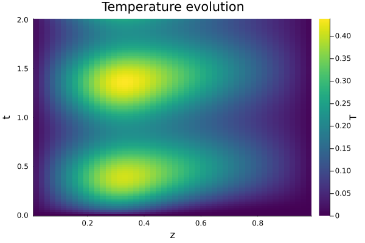
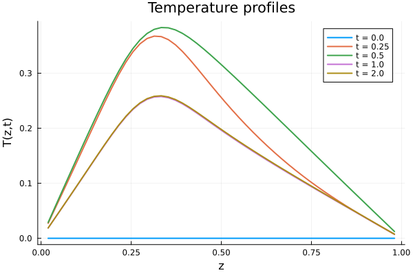
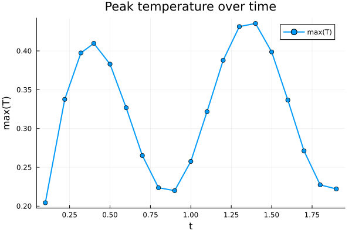
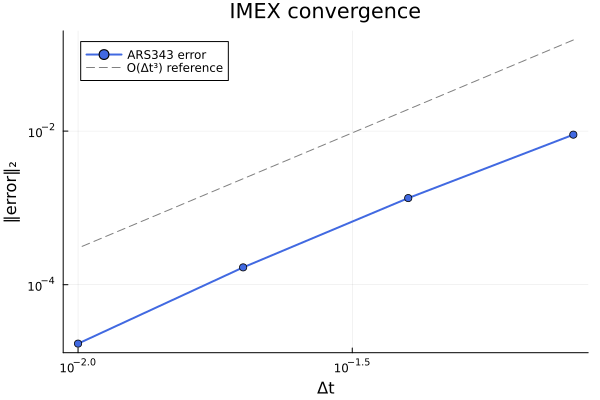

IMEX Time Stepping for Stiff Systems
This tutorial walks through the complete pattern used by ClimaAtmos.jl and ClimaLand.jl to solve stiff PDEs: splitting the right-hand side into explicit and implicit tendencies, providing a Jacobian for the implicit part, configuring Newton's method, and using callbacks for diagnostics.
No ClimaCore dependency is needed — we use simple 1D finite differences so the focus stays on the ClimaTimeSteppers API.
Problem: 1D column diffusion with forcing
We solve the heat equation with a time-dependent source on a vertical column $z \in [0, 1]$:
\[\frac{\partial T}{\partial t} = \underbrace{K \frac{\partial^2 T}{\partial z^2}}_{\text{implicit (stiff)}} + \underbrace{S(z,\, t)}_{\text{explicit}}\]
with homogeneous Dirichlet boundary conditions $T(0,t) = T(1,t) = 0$.
The diffusion term is stiff (it has eigenvalues $\sim -K N^2$), so we treat it implicitly. The source $S$ is smooth and cheap to evaluate, so we treat it explicitly. This is exactly the pattern used in climate models where vertical diffusion is implicit and horizontal tendencies (advection, radiation, etc.) are explicit.
Setup
using LinearAlgebra
import ClimaTimeSteppers as CTS
using ClimaTimeSteppers # for exported algorithm names
using PlotsSpatial discretization (second-order finite differences)
N = 50 # interior grid points
dz = 1.0 / (N + 1) # grid spacing
z = range(dz, 1.0 - dz; length = N) |> collect # interior nodes
K = 0.5 # diffusivity
# The 1D Laplacian with Dirichlet BCs is a tridiagonal matrix:
lap = Tridiagonal(
fill(K / dz^2, N - 1), # sub-diagonal
fill(-2K / dz^2, N), # diagonal
fill(K / dz^2, N - 1), # super-diagonal
)Tendency functions
ClimaTimeSteppers requires in-place tendency functions with signature f!(∂ₜY, Y, p, t), where p is a cache/parameter object.
Explicit tendency — a localized heat source that oscillates in time:
function T_exp!(dT, T, p, t)
z = p.z
@. dT = 5.0 * exp(-((z - 0.3)^2) / 0.01) * (1 + 0.5 * sin(2π * t))
return nothing
endImplicit tendency — diffusion via the precomputed Laplacian:
function T_imp!(dT, T, p, t)
mul!(dT, p.lap, T)
return nothing
endJacobian (Wfact)
For implicit solvers, CTS needs a function that computes $W = \Delta t\, \gamma\, J - I$, where $J$ is the Jacobian of the implicit tendency. Since $T_{\text{imp}}(T) = L\, T$ is linear, $J = L$ (the Laplacian matrix), and Wfact is:
function Wfact!(W, T, p, dtγ, t)
N = size(W, 1)
W .= dtγ .* Matrix(p.lap)
for i in 1:N
W[i, i] -= 1
end
return nothing
endWe wrap the implicit tendency in an ClimaTimeSteppers.ODEFunction that carries the Jacobian prototype and Wfact:
T_imp_wrapped = CTS.ODEFunction(
T_imp!;
jac_prototype = similar(Matrix(lap)), # dense matrix for W
Wfact = Wfact!,
)Cache and auxiliary functions
In ClimaAtmos, the cache! function updates derived quantities (e.g. pressure, temperature) that depend on the state. Here we store the grid and Laplacian in p so tendencies can access them, and use no-op cache! and dss! functions (DSS is only needed with spectral element discretizations):
p = (; z = z, lap = lap)
cache!(Y, p, t) = nothing
dss!(Y, p, t) = nothingAssembling the ODE function and problem
ClimaODEFunction bundles everything into a single object. This is the central type that ClimaAtmos constructs:
ode_function = ClimaODEFunction(;
T_exp!,
T_imp! = T_imp_wrapped,
cache!,
dss!,
)
T0 = zeros(N) # initial condition: cold column
tspan = (0.0, 2.0)
prob = CTS.ODEProblem(ode_function, T0, tspan, p)Choosing an algorithm
ClimaAtmos uses IMEXAlgorithm with an ARK tableau and Newton's method for the implicit stages. The key configuration choices are:
- Tableau:
ARS343(3rd order, 4 stages) is the ClimaAtmos default - Newton iterations: 1 iteration suffices when the Jacobian is updated every timestep and the problem is mildly nonlinear
- Jacobian update:
UpdateEvery(NewTimeStep)reuses the Jacobian across stages within a timestep (cheap for linear problems)
alg = IMEXAlgorithm(
ARS343(),
NewtonsMethod(;
max_iters = 1,
update_j = UpdateEvery(NewTimeStep),
),
)Solving
We use save_everystep = true to capture the full time history:
sol = CTS.solve(prob, alg; dt = 0.02, save_everystep = true)Visualization
Temperature evolution (space-time heatmap)
T_matrix = reduce(hcat, sol.u)' # (n_times × N)
plt1 = heatmap(z, sol.t, T_matrix;
xlabel = "z", ylabel = "t",
title = "Temperature evolution",
colorbar_title = "T",
color = :viridis,
)
savefig(plt1, "imex_heatmap.png")
Snapshots at selected times
plt2 = plot(; xlabel = "z", ylabel = "T(z,t)", title = "Temperature profiles")
for t_snap in [0.0, 0.25, 0.5, 1.0, 2.0]
idx = argmin(abs.(sol.t .- t_snap))
plot!(plt2, z, sol.u[idx]; label = "t = $t_snap", lw = 2)
end
savefig(plt2, "imex_profiles.png")
Why IMEX? Comparing explicit vs. implicit treatment
The diffusion eigenvalues scale as $K / \Delta z^2 \approx 1300$, making the problem stiff. An explicit method needs $\Delta t < \Delta z^2 / (2K) \approx 0.0004$ for stability. IMEX handles this at $\Delta t = 0.02$ — a 50× larger timestep.
dt_explicit_stable = dz^2 / (2K)
println("Explicit stability limit: dt < ", round(dt_explicit_stable; sigdigits = 2))
println("IMEX timestep used: dt = 0.02")
println("Speedup factor: ", round(0.02 / dt_explicit_stable; sigdigits = 2), "×")Explicit stability limit: dt < 0.00038
IMEX timestep used: dt = 0.02
Speedup factor: 52.0×Using callbacks
Callbacks let you run diagnostics, I/O, or checkpointing during the integration. Here we track the peak temperature over time:
using ClimaTimeSteppers: Callbacks
using .Callbacks
peak_temps = Float64[]
peak_times = Float64[]
tracker = EveryXSimulationTime(0.1) do integrator
push!(peak_times, integrator.t)
push!(peak_temps, maximum(integrator.u))
end
prob2 = CTS.ODEProblem(ode_function, zeros(N), tspan, p)
sol2 = CTS.solve(prob2, alg; dt = 0.02, callback = tracker)
plt3 = plot(peak_times, peak_temps;
xlabel = "t", ylabel = "max(T)",
title = "Peak temperature over time",
marker = :circle, lw = 2, label = "max(T)",
)
savefig(plt3, "imex_peak.png")
Convergence test
We verify that ARS343 achieves its expected 3rd-order convergence by running at four timestep sizes and measuring the error against a fine-resolution reference:
ref_prob = CTS.ODEProblem(ode_function, zeros(N), tspan, p)
ref_sol = CTS.solve(ref_prob, alg; dt = 0.0005, saveat = (tspan[2],))
u_ref = ref_sol.u[end]
dts = [0.08, 0.04, 0.02, 0.01]
errs = map(dts) do dt
s = CTS.solve(CTS.ODEProblem(ode_function, zeros(N), tspan, p), alg; dt = dt, saveat = (tspan[2],))
norm(s.u[end] .- u_ref)
end
plt4 = plot(dts, errs;
xscale = :log10, yscale = :log10,
marker = :circle, lw = 2, color = :royalblue,
label = "ARS343 error",
xlabel = "Δt", ylabel = "‖error‖₂",
title = "IMEX convergence",
)
plot!(plt4, dts, 3e2 .* dts .^ 3;
ls = :dash, color = :gray, label = "O(Δt³) reference",
)
savefig(plt4, "imex_convergence.png")
The slope matches the expected 3rd-order rate.
Step-by-step integration
For adaptive workflows (e.g., ClimaCoupler advancing component models), you can create an integrator and step manually:
step_prob = CTS.ODEProblem(ode_function, zeros(N), tspan, p)
integrator = CTS.init(step_prob, alg; dt = 0.5, advance_to_tstop = true)
CTS.add_tstop!(integrator, 1.0)
CTS.step!(integrator) # advances to t = 1.0
println("After step to tstop: t = ", integrator.t)
CTS.set_dt!(integrator, 0.25) # change timestep mid-run
CTS.step!(integrator) # advance one more tstop (t = 2.0)
println("After second step: t = ", integrator.t)After step to tstop: t = 1.0
After second step: t = 2.0Summary
This tutorial demonstrated the complete IMEX pattern used by ClimaAtmos and ClimaLand:
- Split the tendency into explicit (
T_exp!) and implicit (T_imp!) parts - Wrap the implicit tendency in
CTS.ODEFunctionwithWfactandjac_prototype - Build
ClimaODEFunctionto bundle all tendencies, limiters, DSS, and cache functions - Configure
IMEXAlgorithmwith a tableau and Newton solver settings - Use callbacks for diagnostics and I/O
- Step manually when coupling to other models